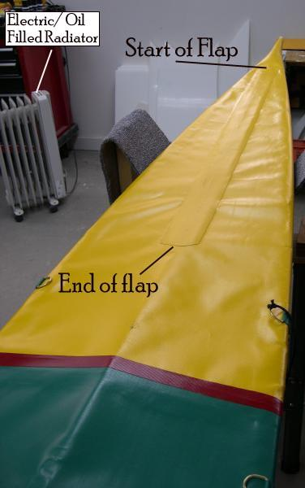

| Zipper Assembly (7 of 7) | Menu Last Page Next Page |
|  |
Installing a Forward Deck Panel
Before the skin can be removed from the frame, you must first remove the temporary lacing that is still located under the forward deck. If you cannot reach all of it through the coaming, than you will need to cut open the forward deck along the deckridge to access the lacing.
There is no need to cut open the deck along it's entire length. Instead, start about one foot from the bow (beginning of the lacing) and continue until you reach the approximate location of the footbrace. (Cross Section 3 on the Sea Rider. You could open up the entire forward deck, but that would later make closing up the deck a more difficult task. Once the lacing is removed, install a 3" wide PVC panel. It can be glued with the skin still on the frame, but it's easier to remove the skin and work on a flat surface like the floor or a workbench. If the skin is removed, slide a 2 X 4 under the deck skin at the cut in order to have a flat stable base to work on. Put several small strips of masking tape, sticky side up, under the cut to keep the sides together while gluing on the panel. Use the same MEK / vinyl cement procedure as before.
|